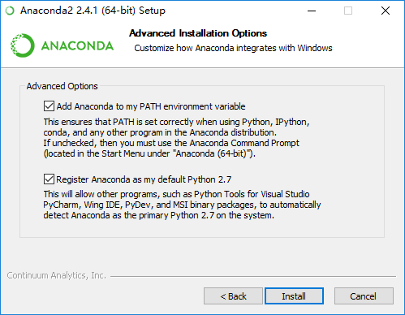
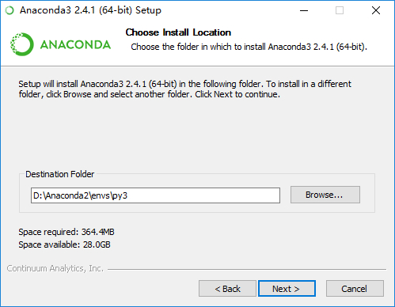
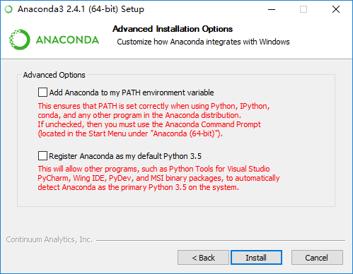
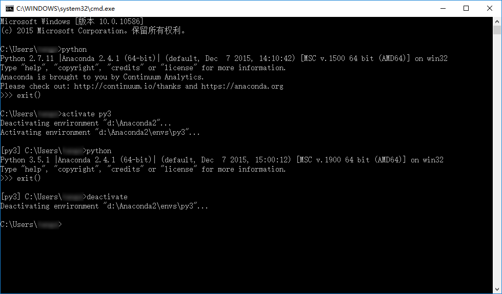
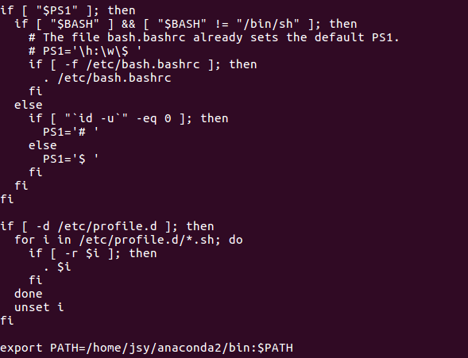
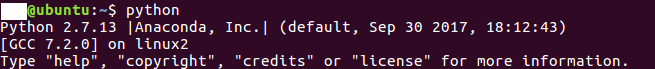

Anaconda入门
一、Anaconda介绍
Anaconda是一个Python的科学计算发行版，包含了超过300个流行的用于科学、数学、工程和数据分析的Python Packages。由于Python有2和3两个版本，因此Anaconda也在Python2和Python3的基础上推出了两个发行版，即Anaconda2和Anaconda3。
二、Anaconda版本
三、同时安装Anaconda2\3
1.Windows下同时安装Anaconda2和Anaconda3
1.1前言
有时候我们会在电脑上同时使用Anaconda2和Anaconda3两个版本，因此有必要考虑它们的共存问题。一般的使用场景是以其中一个版本为主，另外一个版本为辅，因此只需要达到能方便的切换到备用版本，且备用版本的pip等命令能正常使用即可。
由于Anaconda2和Anaconda3包含较多的模块，很多人是不需要这些的，因此若只想要较为纯净的Python2和Python3共存的，可以看本文最后一部分。
1.2操作步骤
- 首先安装主版本，在这里我们选择Anaconda2，按照正常步骤安装即可，这里假定安装目录为
D:\Anaconda2。

- 在这一步打上那两个勾。

第一个选项是将安装目录加入到系统的PATH环境变量中，以后在CMD中便可以直接用python命令启动python。 第二个选项是让其他IDE能够检测到Anaconda2并将Anaconda2作为默认的Python 2.7。
- 安装好Anaconda2之后，再安装Anaconda3，这里Anaconda3的安装目录必须选在D:\Anaconda2\envs子目录下，如图所示，最后的”py3”可以自己另取。

- 这里取消掉那两个勾（按照字面意思理解，打上第二个勾应该是没有影响的。至于第一个选项，由于之前已经把Anaconda2添加到系统PATH路径下了，因此再把Anaconda3添加进去，由于顺序在Anaconda2的后面，几乎是没有作用的，所以这里没有勾上）。

- 安装完成之后，在CMD里面直接输入
python会启动Python2，而使用activate py3（py3即之前Python3安装目录文件夹的名字）命令之后，再使用python即可切换至Python3，如下图所示。使用activate py3命令之后，在命令行前面会出现一个[py3]标记，此时使用任何的python命令都是在Python3下进行的。使用deactivate命令可取消激活Python3。

1.3纯净Python共存
说是纯净，其实也不完全“纯净”，这里需要用到另外一个发行版miniconda，它仅包含Python本身和Conda包管理器，因此体积不大。使用miniconda时的共存安装方法与上述步骤完全一致，就不赘述了。
1.4总结
本文的共存实现方法其实是基于conda的创建虚拟环境的功能，详情可见此链接。
因此在首先安装主要版本之后，也可使用conda create -n py3 python=3命令来安装Python3，但由于网络问题，这种方法容易失败，所以自己先下载好完整安装包，然后安装到主版本主目录下的envs文件夹更方便。
有人也许会说直接同时安装Anaconda2和Anaconda3，然后将Anaconda3目录下的python.exe改为python3.exe也可实现类似的共存。但这种方法存在一个较大的缺陷，即Anaconda3内包含的某些IDE会工作不正常，如Jupyter Notebook和Spyder等，因为他们依赖于安装目录下的python.exe，且备用版本的pip等命令也没办法直接使用，总体来说很不方便。
很多的情况下使用python3的资源会比2多不少，比如说在xgboost包的安装问题上，python2需要用到GIT，编译器等，先下载源码再编译，然后添加路径，之后通过GIT调用python安装，还不一定成功。反观python3，网上有现成的.whl文件，下载下来pip一下就好，轻松又愉快。但是对于之前用惯了python2，并且有不少代码已经写在里边的同学，一时间要换成3也是有点困难，所以就需要同时使用python2和3了。我们需要的是基于某个版本的anaconda，2或者3都可以，下面以2为例。
首先需要我们设置一下anaconda，使用清华的镜像，原地址会非常慢。cmd中输入
conda config --add channels https://mirrors.tuna.tsinghua.edu.cn/anaconda/pkgs/free/
conda config --set show_channel_urls yes
这之后在你的c:\Users\用户名下的.condarc中就会多了我们添加的地址
只需要删掉defaults那一行，保存一下就设置成功了。
之后开始干正事，首先在cmd中写入命令
conda update conda
用于更新anaconda，完成后
conda create --name python3 python=3.6
activate python3
相当于在conda目录的envs文件夹中创建了一个新的环境python3，并且通过activate命令激活了它，在activate命令后你的cmd前应该多了一个括号里面写着python3
然后在激活了的python3环境中安装anaconda的库
conda install anaconda
因为之前已经设置了镜像，如果你的网速不差的话应该一会就好了，完成之后欣喜的发现
所有东西都多了python3的版本，当然如果你习惯用notebook来debug的话同样可以参照之前的博客里提到的，给python3也设置一个自定义工作目录的notebook快捷方式。
然后就可以愉快的用它们喽，打开python3的notebook来看看是不是真的python3好了，输入 开心地看见
大功告成。
2.Liunx（Ubuntu）下安装Anaconda
- 安装anaconda，执行下列命令
bash Anaconda2-5.0.0.1-Linux-x86_64.sh
或
. /Anaconda2-5.0.0.1-Linux-x86_64.sh # . 即为默认使用bash命令开始执行
- 安装过程中会显示配置路径
Prefix=/home/jsy/anaconda2/
- 安装完之后，运行python，仍是ubuntu自带的python信息，需自己设置下环境变量
- 在终端输入
sudo gedit /etc/profile
打开profile文件
- 在文件末尾添加一行：
bash export PATH=/home/[用户名]/anaconda2/bin:$PATH其中，将“/home/[用户名]/anaconda2/bin”替换为你实际的安装路径，保存。

7.重启Linux
8.打开终端，输入python，如果出现如下界面，表明设置成功。

你还可以用conda info 来查询安装信息
3.更改pip源
windows
在 c:\user\username\pip\pip.ini中加入
[global]
index-url=https://pypi.tuna.tsinghua.edu.cn/simple
[install]
trusted-host=pypi.tuna.tsinghua.edu.cn
disable-pip-version-check = true
timeout = 6000 # 是把超时时间设置为6000s
注意：首先需要创建pip文件夹与pip.ini文件。
linux（ubuntu）
同样首先建pip的配置文件
cd $HOME
mkdir .pip
cd .pip
sudo vim pip.conf
在里面添加
[global]
index-url=https://pypi.tuna.tsinghua.edu.cn/simple
[install]
trusted-host=pypi.tuna.tsinghua.edu.cn
disable-pip-version-check = true
timeout = 6000 # 是把超时时间设置为6000s
更改anaconda源
conda config --add channels https://mirrors.tuna.tsinghua.edu.cn/anaconda/pkgs/free/ # 不要有引号，网上有的帖子会在链接两端加引号，需要去掉。
conda config --set show_channel_urls yes
好了，这下可以开心的下载东西了
如何删除添加的源呢？
conda config --remove channels https://mirrors.tuna.tsinghua.edu.cn/anaconda/pkgs/free/
看看当前的 cofig 是什么样的
conda config --show
四、conda和pip对比
既然都是关于python的包管理工具为什么有了pip 我们还需要conda？在stackoverflow上的英文回答：
Having been involved in the python world for so long, we are all aware of pip, easy_install, and virtualenv, but these tools did not meet all of our specific requirements. The main problem is that they are focused around Python, neglecting non-Python library dependencies, such as HDF5, MKL, LLVM, etc., which do not have a setup.py in their source code and also do not install files into Python’s site-packages directory. So Conda is a packaging tool and installer that aims to do more than what pip does; handle library dependencies outside of the Python packages as well as the Python packages themselves. Conda also creates a virtual environment, like virtualenv does.
As such, Conda should be compared to Buildout perhaps, another tool that lets you handle both Python and non-Python installation tasks.
Because Conda introduces a new packaging format, you cannot use pip and Conda interchangeably; pip cannot install the Conda package format. You can use the two tools side by side but they do not interoperate either.
在python的世界里也浸淫多年了，我们早已习惯有 pip ，easy_install 和virtualenv的世界，但是这些🔧没有解决我们所有的需求哦。这其中主要的问题是他们全部都集中解决关于python相关问题而忽略了非python库的依赖关系。(这句我没看明白)，就像 HDF5， MKL LLVM，etc等，在他们的源码中并没有setup.py这种东西，而且也没有安装文件在python的site-packages 目录中。
所有conda就是一个包管理工具和安装工具，它就是要做比pip更多的事情；在python-site-packages之外管理python 库依赖关系。 而且conda同样也像virtualenv一样创建一个虚拟环境。
conda可以让你同时管理安装处理你有关python的任务和跟python无关的任务。
conda使用了一个新的包格式，你不能交替使用pip 和conda。因为pip不能安装和解析conda的包格式。你可以使用两个工具 但是他们是不能交互的。
conda环境的常用启动命令：
source activate xxx # 启动xxx环境
source deactivate # 关闭当前环境
conda env update -f environment.yml # 更新配置文件
五、conda、virtualenv、pipenv管理虚拟环境的操作和效果对比
- 创建虚拟环境。
- 切换虚拟环境。
- 安装开发包。
- 删除虚拟环境。
conda创建虚拟环境：
1.查看包
conda list # 查看安装了哪些包
conda env list # 查看有哪些虚拟环境
conda -V # 查看conda的版本
2.创建虚拟环境,命名为myflaskapp，n就是指name；并安装flask包。
Note that the conda create command requires that you give it the name of a package to install in the new environment.
conda命令创建虚拟环境时，必须指定一个或者几个你需要安装的package。
conda create -n py2 python=2* anaconda
这样就会安装anaconda2版本。
栗子1： 这条命令安装了一个名为myflaskapp虚拟环境，安装flask包。
conda create -n myflaskapp flask
栗子2： 这个是克隆创建了一个和原系统一样的python环境，命名为nb。
conda create -n nb --clone root
栗子3： 这就不需指定具体包了
conda create --name $ENVIRONMENT_NAME python
其他：
$ conda create -n py3 python=3*
$ conda create -n py2 python=2*
This will create two environments, one with Python3 and the other with Python2. I typically set one of these as my default by adding source activate py3 to my terminal startup. Typically I only use these “named python” environments to run a Python REPL or do general Python tasks. I’ll create another conda environment named specifically for each real project I work on.
这个创建两个python版本的环境。
3.切换环境
Linux：
source activate myflaskapp
Windows：
activate myflaskapp
4.关闭环境
Linux：
source deactivate
Windows：
deactivate
5.改指定虚拟环境安装包
conda install -n yourenvname [package]
6.移除虚拟环境
移除某个环境中的包
conda remove --name $ENVIRONMENT_NAME $PACKAGE_NAME
移除某个虚拟环境
conda remove -n yourenvname --all
这些所有的虚拟环境，都在C:\Anaconda3\envs文件夹下。
virtualenv创建虚拟环境
1.安装virtualenv
pip install virtualenv
2.创建虚拟环境
mkdir myproject
cd myproject
virtualenv venv
创建了一个名为myproject的文件夹，然后这里边创建虚拟环境venv。
在创建virtualenv时增加 –no-site-packages 选项的virtualenv就不会读取系统包，如下：
virtualenv nowamagic_venv --no-site-packages
–distribute 选项使virtualenv使用新的基于发行版的包管理系统而不是 setuptools 获得的包。 你现在需要知道的就是 –distribute 选项会自动在新的虚拟环境中安装 pip ，这样就不需要手动安装了。 当你成为一个更有经验的Python开发者，你就会明白其中细节。
virtualenv --distribute nowamagic_venv
3.激活虚拟环境 Linux：
. venv/bin/activate
或者
source $ENV_BASE_DIR/$ENVIRONMENT_NAME/bin/activate # 进入到venv虚拟环境文件夹下，可以source bin/activate
Windows：
venv\scripts\activate
4.退出环境
Linux：和Windows：
deactivate
Pipenv创建虚拟环境
virtualenv 创建虚拟环境，Pip 负责安装第三方包，而 Pipenv 就是两者的结合体，给我们的开发带来了更多的便利性。 所有的命令都可以通过 pipenv 完成。
现在就花5分钟，掌握这个工具的使用吧。
1 安装 Pipenv
pipenv 的安装和普通的第三方库没什么区别，可以直接使用 pip 命令安装。
pip install pipenv
在 Mac 上可以使用 brew 命令来安装
brew install pipenv
接下来介绍如何使用 Pipenv，我们开启新项目后，首先要做的就是为其单独创建一个虚拟环境（确保你的电脑里面只安装一个Python版本，否则总会出现不可预知的问题）
2 创建虚拟环境
虚拟环境是每个项目独立使用的 Python 执行环境。
# 进入项目所在目录
cd your_project
pipenv install
严格来说，pipenv 没有直接提供创建虚拟环境的命令，而是在背后默默帮你创建，install 其实是安装第三方包的命令，对新项目来说，它会先创建虚拟环境，同时，在项目目录下创建名为 Pipfile 的空文件。
虚拟环境的名字和项目名相关，默认情况下，Pipenv 会自动为你选择虚拟环境的存储位置，在 Windows 下通常为 C:\Users.virtualenvs
3 安装第三方包
以前安装包使用 pip 命令，现在你可以用 pipenv 命令来安装，例如我安装 requests 包：
pipenv install requests
使用 pipenv 安装第三方包有什么好处呢？安装前你不需要激活虚拟环境，就直接下载到了虚拟环境中，如果用 pip 安装，你还要先激活该环境。（我经常忘记给虚拟环境取了什么名字）
安装完包之后，Pipfile 文件会被更新，同时新增了 Pipfile.lock 文件
Pipfile 文件中的结构：
[[source]]
name = "pypi"
url = "https://pypi.org/simple"
verify_ssl = true
[dev-packages]
[packages]
requests = "*"
[requires]
python_version = "3.7"
Pipfile 文件中记录了3件事情：
- 包从哪里下载的
- 需要下载哪些包，
*表示始终下载最新版本， dev-packages 表示专用于开发阶段使用的包。 - Python 版本是多少
Pipfile.lock 文件详细记录了这些包的信息，包括这个包的hash值多少，还有包所依赖的其他包有哪些。
把这些信息写在 Pipfile 文件中的好处是，当我们把项目部署到正式环境时，不再需要一个一个去安装了，直接执行 pipenv install 就会自动创建虚拟环境的同时，把 Pipfile 中包都安装好。
激活虚拟环境
运行程序前我们还是要激活虚拟环境，我们可以使用 pipenv shell 来激活，不需要指定名字，只要你在当前项目下执行该命令就行。
pipenv shell
Launching subshell in virtual environment…
Microsoft Windows [Version 10.0.18290.1000]
(c) 2018 Microsoft Corporation. All rights reserved.
(weihub-flask-j3rUnHkH) D:\my\weihub-flask>
注意到了吗？ 目录前面多了一对括号括起来的字符串，它就是我们刚刚创建的虚拟环境名字。 激活虚拟环境后，你就可以开始运行你的程序了。
(weihub-flask-j3rUnHkH) D:\my\weihub-flask> python
>>> import requests
>>> requests.get("http://baidu.com").text
'<html>\n<meta http-equiv="refresh" content="0;url=http://www.baidu.com/">\n</html>\n'
>>>
退出虚拟环境使用 exit 命令， 这时候那对括号就消失了。
pipenv run
另外，pipenv 还准备了一个 run 命令，它可以在你不必显示激活虚拟环境的情况下，用虚拟环境执行命令，例如：
pipenv run python -m http.server
pipenv run python main.py
以上就是你要掌握的 Pipenv 基础知识，如果有兴趣，你还可以了解下面的内容
从 requirements.txt 导入
如果是老项目，你把依赖包全部放在 requirements.txt 中，pipenv 很贴心，它支持从 requirements.txt 文件中安装，方便使用 pip 的用户平滑迁移过来。
pipenv install -r requirements.txt
只安装到开发环境
在开发环境下我们要安装 django-debug-toolbar， pytest 这样的包，这些在生产环境其实是用不上的，所以没必要安装，那么我们在安装某个包的时候可以在 isntall 后面加个参数 –dev，表示只安装在开发环境，例如：
pipenv install pytest --dev
在生产环境执行：
# 生产环境
pipenv install
开发环境执行：
# 开发环境
pipenv install --dev
卸载包
pipenv uninstall requests
删除虚拟环境
pipenv --rm
删除虚拟环境后，会把虚拟环境目录和里面的所有依赖包删除掉，但是 Pipfile 和 Pipfile.lock 文件还会保留。
常见问题：
如果你在使用 pipenv 创建虚拟环境失败了，出现类似这样的错误：
pipenv install
Creating a virtualenv for this project…
Pipfile: D:\my\weihub-flask\Pipfile
Using c:\users\lzjun\appdata\local\programs\python\python37-32\python.exe (3.7.1) to create virtualenv…
[ ===] Creating virtual environment...Already using interpreter c:\users\lzjun\appdata\local\programs\python\python37-32\python.exe
Using base prefix 'c:\\users\\lzjun\\appdata\\local\\programs\\python\\python37-32'
New python executable in C:\Users\lzjun\.virtualenvs\weihub-flask-j3rUnHkH\Scripts\python.exe
ERROR: The executable C:\Users\lzjun\.virtualenvs\weihub-flask-j3rUnHkH\Scripts\python.exe is not functioning
ERROR: It thinks sys.prefix is 'd:\\my\\weihub-flask' (should be 'c:\\users\\lzjun\\.virtualenvs\\weihub-flask-j3runhkh')
ERROR: virtualenv is not compatible with this system or executable
Note: some Windows users have reported this error when they installed Python for "Only this user" or have multiple versions of Python installed. Copying the appropriate PythonXX.dll to the virtualenv Scripts/ directory may fix this problem.
Failed creating virtual environment
[pipenv.exceptions.VirtualenvCreationException]: File "c:\users\lzjun\appdata\local\programs\python\python37-32\lib\site-packages\pipenv\cli\command.py", line 254, in install
[pipenv.exceptions.VirtualenvCreationException]: File "c:\users\lzjun\appdata\local\programs\python\python37-32\lib\site-packages\pipenv\core.py", line 1741, in do_install
[pipenv.exceptions.VirtualenvCreationException]: File "c:\users\lzjun\appdata\local\programs\python\python37-32\lib\site-packages\pipenv\core.py", line 574, in ensure_project
[pipenv.exceptions.VirtualenvCreationException]: File "c:\users\lzjun\appdata\local\programs\python\python37-32\lib\site-packages\pipenv\core.py", line 506, in ensure_virtualenv
[pipenv.exceptions.VirtualenvCreationException]: python=python, site_packages=site_packages, pypi_mirror=pypi_mirror
[pipenv.exceptions.VirtualenvCreationException]: File "c:\users\lzjun\appdata\local\programs\python\python37-32\lib\site-packages\pipenv\core.py", line 935, in do_create_virtualenv
[pipenv.exceptions.VirtualenvCreationException]: Fatal Python error: initfsencoding: unable to load the file system codec
Traceback (most recent call last):
File "C:\Users\lzjun\.virtualenvs\weihub-flask-j3rUnHkH\lib\encodings\__init__.py", line 31, in <module>
File "C:\Users\lzjun\.virtualenvs\weihub-flask-j3rUnHkH\lib\codecs.py", line 481
except UnicodeDecodeError, exc:
^
SyntaxError: invalid syntax
很有可能就是你的系统中安装多有个版本的Python，可以模糊搜索 Python*.dll ，把那些不相关的全部删除，重新试试。
如何提高下载速度
修改 Pipfile 文件中的URL，将下载源指定为阿里云或者豆瓣等国内更快的源
[[source]]
name = "pypi"
url = "https://mirrors.aliyun.com/pypi/simple"
# 或者使用豆瓣源
url = "http://pypi.douban.com/simple"
verify_ssl = true
Pipenv 有什么缺点
慢，有时候感觉特别慢，就一直卡在 Locking 过程中，你在安装的时候跳过 lock 环节，使用命令
pipenv install --skip-lock
更多操作指南，请参考官方文档： https://pipenv.readthedocs.io/en/latest/basics/
— EOF —
参考资料
Using Continuum Analytics Conda as a replacement for virtualenv, pyenv, and more？
Create virtual environments for python with conda